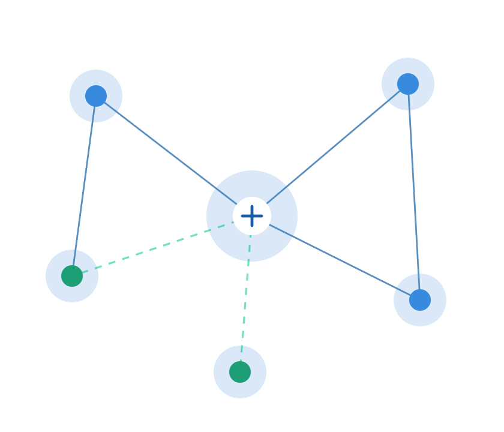

SecureGov is the national agency responsible for securing networks, infrastructure, and digital services across government departments — so the public can trust that the systems behind essential services stay safe, available, and resilient.

SecureGov operates across the full lifecycle of government technology by defending it, building it, and keeping it running.
We monitor, defend, and continuously test government networks against intrusion, malware, and emerging threats around the clock.
From data centres to department workstations, we design and maintain the systems that public services depend on every day.
Our support teams resolve incidents quickly and help departments adopt new technology safely, without disrupting public services.
Every system we manage is logged, audited, and reviewed against national cybersecurity standards. Departments retain full visibility into how their systems are protected.
Our Security Operations Centre monitors government networks continuously, with analysts on call to respond to incidents the moment they're detected.
Our analysts and engineers hold appropriate security clearances and undergo ongoing training as threats and technology evolve.
We work alongside IT department teams rather than replacing them, building local capability while strengthening shared infrastructure.
We're hiring cybersecurity analysts, IT support officers, and infrastructure specialists to join our growing team.
Explore careers at SecureGov